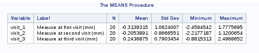
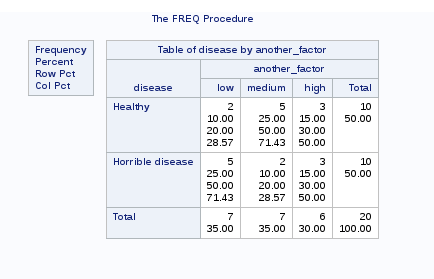
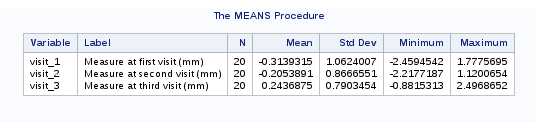
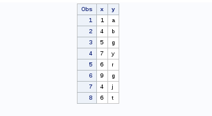
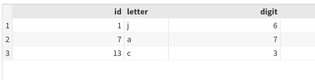
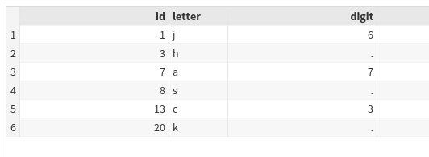

data df;
set df;
newfactor = input(a_factor, 3.);
run;
SAS Labels
Labelling
Both variables and values can be labelled
Once created, these labels will appear in the output of statistical procedures
Nicer and clearer output
Labels for variables
data df;
set df;
label visit_1 = "Measure at first visit (mm)"
visit_2 = "Measure at second visit (mm)"
visit_3 = "Measure at third visit (mm)";
run;
proc means data = df;
var visit_1 visit_2 visit_3;
run;

Labels for values
Specified through creating new formats
proc format;
value dis 1 = 'Horrible disease' 0='Healthy';
value factor_one 1 = 'Factor present' 0 = 'Factor absent';
value factor_two 1-2='low' 3 = 'medium' 4-5 = 'high';
run;
* an example in proc freq;
proc freq data = df;
format disease dis. another_factor factor_two.;
tables disease * another_factor;
run;

Dates
Dates and times
SAS handles 3 types of date and time values
Time values (internal: Number of seconds since midnight)
Date values (internal: Number of days since 1.1.1970)
Datetime values (internal: Number of seconds since 1.1.1970)
Example: Create some dates and times. Note that a proc print will display the internal representation
data text2;
expr1 = 'A; simple; sentence';
new = compress(expr1, ";");
put new=;
expr2 = '122-ll43 76';
new2 = compress(expr2, "-", 'd'); * remove '-' and any digit;
put new2=;
expr3 = '1 2 4 5 7';
new3 = compress(expr3, , 's'); * Remove spaces;
put new3=;
run;
new=A simple sentence
new2=ll
new3=12457
Simple match and replacement
data text3;
a = count("banana", "a"); * count the number of a's;
put a=;
where = "university of california"; * Position of 'cal' in the string;
i = index(where,"cal");
put i=;
hihi = reverse(where);
put hihi=;
up = upcase(where);
put up=;
new = translate(where, 'UC', 'uc'); * Change u's and c's into U's and C's
put new=;
new2 = tranwrd(where, 'university', 'beach'); * Replace words;
put new2=;
run;
a=3
i=15
hihi=ainrofilac fo ytisrevinu
up=UNIVERSITY OF CALIFORNIA
new=University of California
new2=beach of california
Data manipulation
Row subscripting
With a condition
data ulm;
set df;
if upcase(center) eq 'ULM' then delete;
run;
where statement
data high;
set df(where = (another_factor in (4 5)));
run;
Column subscripting
Keep every variables starting with visit (: is a wildcard)
data visit;
set df;
keep visit:;
run;
Drop every variables between id and center
data visit2;
set df;
drop id--center;
run;
Keep only numeric variables
data numeric;
set df;
keep id-numeric-visit_3_d;
run;
Column subscripting
Keep character variables
data char;
set df;
keep id-character-visit_3_d;
run;
Remove visit_1 to visit_3
data sans_visit;
set df;
drop visit_1-visit_3;
run;
proc SQL
proc sql permits to sort, summarize, subset, join (merge), and concatenate datasets, create new variables, and print the results or create a new table or view all in one step.
A mix of SAS and SQL syntax
Does not need sorted data sets for merge operations
The command starts with proc sql and ends with quit; (not run)
Select variables with proc sql
Create a data set new from df containing the variables visit_1 to visit_3
proc sql;
create table new as
select visit_1, visit_2, visit_3
from df
quit;
More complicated
Create data set new_new based on df
select variable id and rename as pat
create exp_visit as \(\exp(\mbox{visit})\)
select variables visit_2, visit_3 and visit_1_d (with format change)
Select only the individuals for which center equals ulm and freiburg
Finally, order by descending pat
proc sql;
create table new_new as
select id as pat, exp(visit_1) as exp_visit1, visit_2, visit_3, visit_1_d format=date9.
from df
where center in ("ulm", "Freiburg")
order by id desc;
quit;
Array
Arrays in SAS permit to perform the same task on a group of variables
array arrayname variable_list <$>;
All the variables in an array must be of the same type
An array can not have the same name as a variable
You can use the keyword _temporary_ instead of a variable list
data test_array;
set df;
array x visit_1-visit_3;
array res{3};
do i=1 to dim(x);
res{i} = x{i} * 10;
end;
keep visit_1-visit_3 res:;
run;
Data reshaping
proc transpose
The name says it all. The problem is that proc transpose can only manage one variable at a time. Thus we need to
Transpose visit_X
Transpose visit_X_d
Merge back with the whole data set
proc transpose data = df
out = long1(rename=(col1=measure)) name = visit;
by id;
var visit_1-visit_3;
run;
proc transpose data = df
out = long2(rename=(col1=date)) name = visit;
by id;
var visit_1_d--visit_3_d;
run;
* and merge;
data df_long;
merge long1
long2
df(keep = id a_factor another_factor disease center);
by id;
run;
Reshape using a data step
data df_long2;
set df;
array m visit_1-visit_3;
array d visit_1_d--visit_3_d;
do _i = 1 to dim(m);
measure = m(_i);
date = d(_i);
visit = _i;
output;
end;
format date date9.;
keep id center a_factor another_factor disease measure date visit;
run;
Always check !!!
proc means data = df;
var visit_1-visit_3;
run;

Always check !!!
* need to sort before using the by statement in proc means;
proc sort data = df_long
out = df_long;
by visit;
proc means data = df_long;
var measure;
by visit;
run;
Always check !!!
proc sort data = df_long2
out = df_long2;
by visit;
proc means data = df_long2;
var measure;
by visit;
run;
Data Merging
Combine data by rows
data d1;
input x y $;
datalines;
1 a
4 b
5 g
7 y
;
run;
data d2;
input x y $;
datalines;
6 r
9 g
4 j
6 t
;
run;
Note the $ sign after y to specify this variable as character
Combine data by rows
data row_bind;
set d1 d2;
proc print data = row_bind;
run;

Combine data by columns
We first need to rename the columns of d2, otherwise SAS does nothing
data d3;
set d2(rename=(x=z y=w));
run;
Combine data by columns
Either use 2 set statements
data col_bind;
set d1;
set d3;
run;
Or merge by row numbers (which means, don’t specify any variable to merge on)
data col_bind2;
merge d1 d3;
run;
Merging
data dd1;
input id letter $;
datalines;
20 k
1 j
3 h
7 a
13 c
8 s
;
run;
data dd2;
input id digit;
datalines;
13 3
14 8
7 7
1 6
54 0
;
run;
Merging
Before merging using the merge statement, data sets have to be sorted wrt the variables used for merging
proc sort data=dd1
out=dd1_sort;
by id;
run;
proc sort data=dd2
out=dd2_sort;
by id;
run;
Merging
By default SAS performs a full join
data ddmerge;
merge dd1_sort dd2_sort;
by id;
run;
Merging
To perform other types of joins, use the in= directive
That creates temporary variables indicating from which data the observations are coming from
Natural join
data ddmerge_natural;
merge dd1_sort(in=in1) dd2_sort(in=in2);
by id;
if in1 eq 0 or in2 eq 0 then delete;
run;

Merging
Left join
data ddmerge_left;
merge dd1_sort(in=in1) dd2_sort(in=in2);
by id;
if in1 eq 0 then delete;
run;

Merging with proc SQL
Natural join
proc sql;
create table ddmerge_natural_sql as
select *
from dd1 inner join dd2
on dd1.id=dd2.id;
quit;
When the variables you join on don’t share the same name
data dd2_alt;
set dd2(rename=(id=pat));
run;
proc sql;
create table ddmerge_natural_sql2 as
select *
from dd1 inner join dd2_alt
on dd1.id=dd2_alt.pat;
quit;
Merging with proc SQL
Left join
proc sql;
create table ddmerge_left_sql as
select *
from dd1 left join dd2
on dd1.id=dd2.id;
quit;